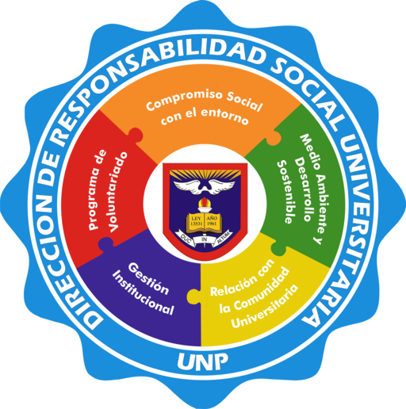

Ubicación

Asamblea Universitaria
Consejo Universitario
Niveles Organizacionales
1
Primer Nivel
2
Segundo Nivel
Rector
Vicerrectorado Académico
Vicerrectorado de Investigación
Dirección de Servicios Académicos
Dirección de Admisión
Dirección de Bienestar Universitario
Dirección de Responsabilidad Social Universitaria
